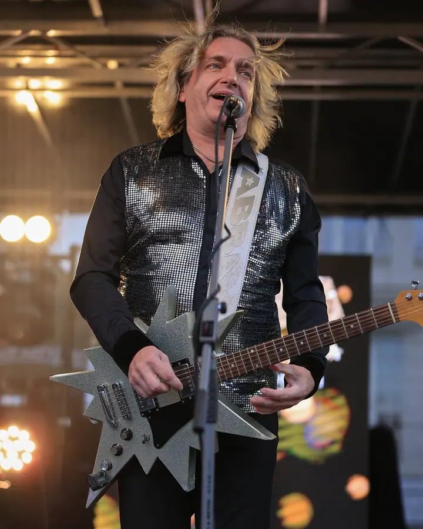
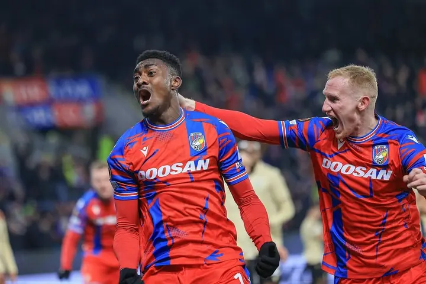

01 / 04
Eventy a reportáže
Fotím koncerty, sportovní zápasy a další akce. Jde mi o fotky s atmosférou, na kterých je vidět, co se v tu chvíli opravdu dělo.
Zeptat se na termín→

Fotky s atmosférou z pódia i stadionu
Zeptat se na termín →(01) Ahoj
Jmenuji se Tomáš Liška a pod značkou FoxFoto fotím portréty, koncerty a sportovní akce . Sídlím v Dobřanech a od roku 2015 vedu v Plzni kurzy fotografie pro začátečníky i pokročilé.
5 663lidí sleduje mou práci na Instagramu
184příspěvků s fotkami a příběhy
(02) Co fotím
01 / 04
Fotím koncerty, sportovní zápasy a další akce. Jde mi o fotky s atmosférou, na kterých je vidět, co se v tu chvíli opravdu dělo.
Zeptat se na termín→Dále nabízím
Portréty jsou vedle eventů moje hlavní práce. Domluvíme se, k čemu fotky potřebujete, a podle toho vybereme místo i světlo.
↗V Centru robotiky v Plzni učím fotografii začátečníky i pokročilé. Ukážu vám, jak moderní foto techniku využít co nejlépe.
↗Na svatbě fotím stejně jako na koncertě. Nechávám věci plynout a zachycuju to, co se během dne opravdu děje.
↗(04) Postup
Od první zprávy po hotovou galerii.
Krok 1 z 4
Napište mi, co a kdy potřebujete nafotit. Ozvu se vám a domluvíme se na termínu.
Krok 2 z 4
Probereme místo, program akce a to, k čemu budete fotky používat. Podle toho si připravím techniku.
Krok 3 z 4
Na místě pracuji nenápadně a sleduji, co se děje. U portrétu vám poradím s pózou i světlem.
Krok 4 z 4
Vyberu nejlepší snímky, upravím je a pošlu vám je v podobě připravené k použití.
Fotím tam, kde se něco děje.
(05) Za objektivem
Nejvíc mě baví fotit tam, kde se něco děje. Koncert, fotbalový zápas nebo jiná akce, všude hledám chvíli, ve které je cítit atmosféra. Fotky by vám ji měly připomenout i po letech.
Kromě eventů fotím portréty, reportáže a svatby. Ať je to cokoli, chci, aby fotky působily přirozeně a nikdo před objektivem nemusel nic hrát.
Fotografii taky učím. Od roku 2015 vedu kurzy v Centru robotiky v Plzni a rád vám ukážu, jak využít moderní foto techniku tím nejlepším způsobem.
Tomáš
Tomáš Liška · Fotograf portrétů, koncertů a sportu
Hlavně koncerty, sportovní zápasy a reportáže z různých akcí. Kromě toho fotím portréty a svatby.
Sídlím v Dobřanech a nejčastěji fotím v Plzni a okolí. Po domluvě rád přijedu i jinam.
Pro začátečníky i pokročilé. Kurzy vedu v Centru robotiky v Plzni a učím, jak naplno využít moderní foto techniku.
Napište mi přes formulář, na e-mail tomas@foxfoto.cz, nebo zavolejte na +420 602 712 301. Domluvíme termín i podrobnosti.
(07) Kontakt
Napište pár vět o tom, co si představujete, a termín, který se vám hodí.
tomas@foxfoto.cz